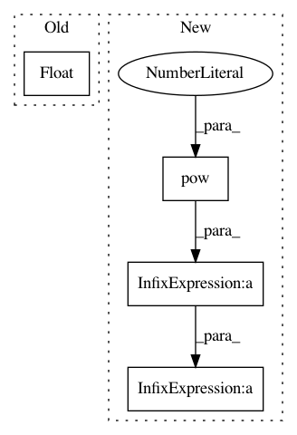

1cc817bcc961061941fddcd081ab2dc19da6b877,maths/volume.py,,vol_right_circ_cone,#Any#Any#,32
Before Change
volume = (1/3) * pi * radius^2 * height
return (float(1) / 3) * pi * (radius ** 2) * height
def vol_prism(area_of_base, height):
After Change
>>> vol_right_circ_cone(2, 3)
12.566370614359172
return pi * pow(radius, 2) * height / 3.0
def vol_prism(area_of_base: float, height: float) -> float:
In pattern: SUPERPATTERN
Frequency: 3
Non-data size: 4
Instances
Project Name: TheAlgorithms/Python
Commit Name: 1cc817bcc961061941fddcd081ab2dc19da6b877
Time: 2020-01-04
Author: 33547678+yuriimchg@users.noreply.github.com
File Name: maths/volume.py
Class Name:
Method Name: vol_right_circ_cone
Project Name: OpenNMT/OpenNMT-py
Commit Name: ba164c0dbb3d8171004380956a88431f4e8248ba
Time: 2017-08-01
Author: bpeters@coli.uni-saarland.de
File Name: onmt/Models.py
Class Name: Embeddings
Method Name: make_positional_encodings
Project Name: cornellius-gp/gpytorch
Commit Name: 212e1f2023382e3c3431d41b7919b4e7af3e30cf
Time: 2019-01-27
Author: dme65@cornell.edu
File Name: gpytorch/kernels/rbf_kernel_grad.py
Class Name: RBFKernelGrad
Method Name: forward